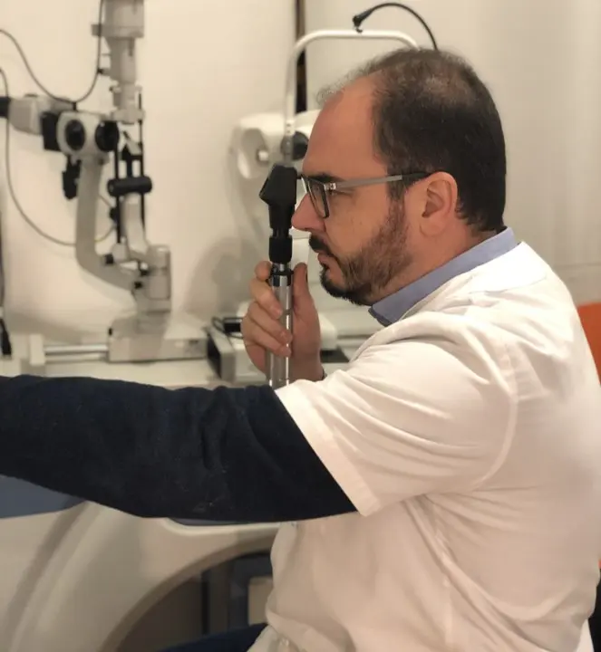
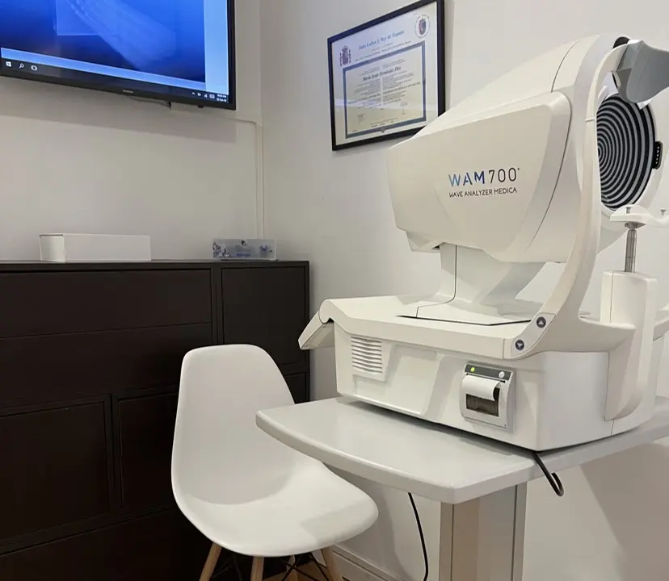
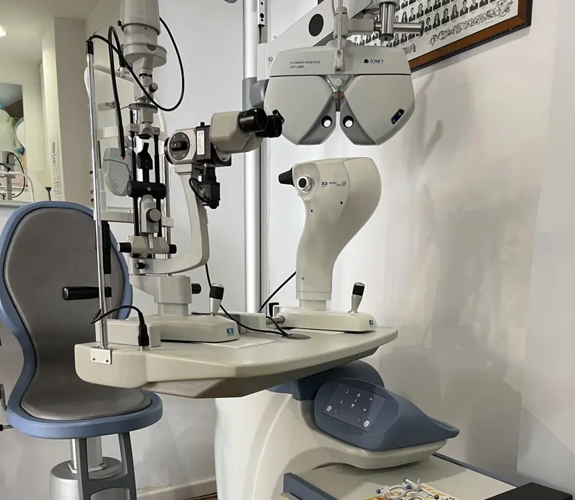
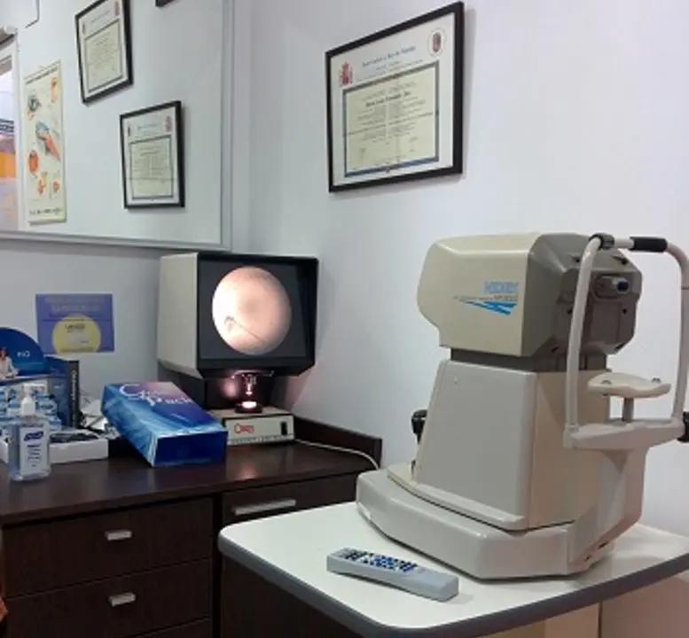
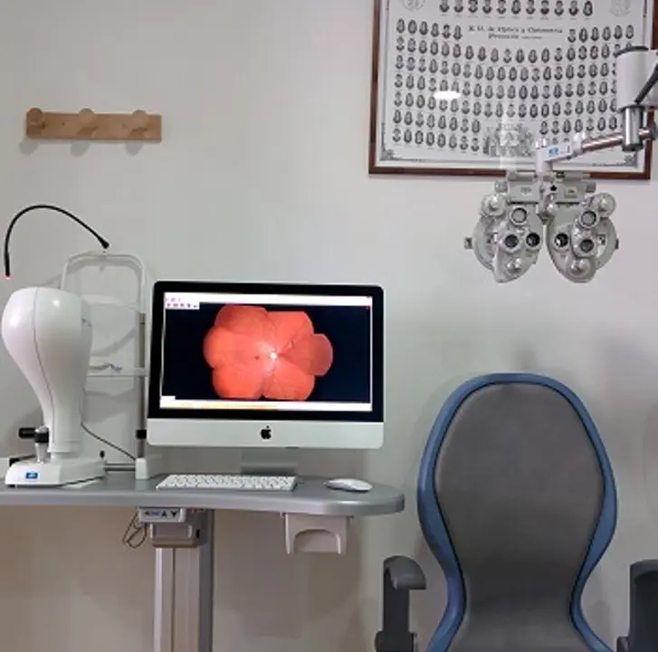
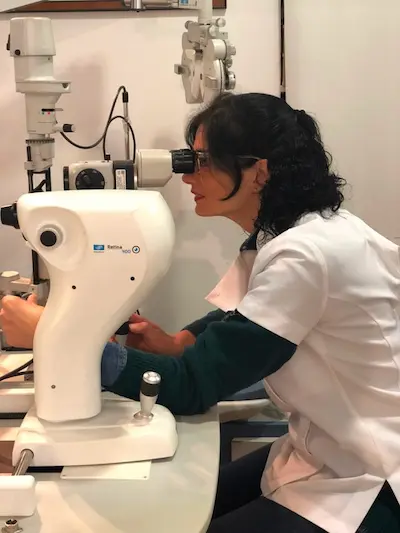

Zure ikusmen-osasuna da gure lehentasuna
Zerbitzuak eskaintzen ditugu zure begien osasuna gaur bertatik zaintzeko.
Pazientearen informazioa
Urtero glaukoma, DMAE, erretinopati eta erretinatik bereizteko kasu berriak agertzen dira... Denboran detektatzeko eta ikusmenari modu itzulezinean eragin ez diezaien, txikitatik berrazterketak egin behar dira, eguneroko zaintza mantendu eta arrisku-faktoreak ezagutu.
Gure Ekipoak
Optometria, Kontaktologia eta Miopia Kontrola






Zer da Erretinografia?
Erretinografia erretinak bereizmen handiko irudiak lortzeko medikuntzan erabiltzen den teknika bat da. Sinplea, erabilgarria, segurua eta oso erosoa da pazientearentzat.
Egindakoan, erretinako espezialista oftalmologo batek probak jasotzen ditu eta telematikoki txosten bat egiten du non erretinako irudietan anomaliaren bat dagoen ebaluatzen duen.
1. Proba sinplea
Erabilgarria, segurua eta oso erosoa pazientearentzat.
2. Teknika medikoa
Erretinak bereizmen handiko irudiak lortzen ditu.
3. Erretina
Argiarekiko sentikorra den ehun-geruza, ikusmena posible egiten duena.
4. Detekzio goiztiarra
Erretinan eragiten duten gaixotasunen zantzuak detektatzen ditu.
Detekta ditzakegun gaixotasunak
Erretinopati Diabetikoa
Gaixotasun diabetiko okular ohikoena. Erretinan odol-hodien aldaketak daudenean gertatzen da eta kasu askotan itzuli ezin den ikusmen-galera eragiten du.
DMAE
Adinarekin Lotutako Makula Degenerazioa. Makulan kalteak edo hondatzea eragiten duen begi-gaixotasuna, ikusmen-galera dakartena.
Erretinopati Hipertentsiboa
Hipertentsio arterialak erretinan eragindako aldaketak. Beste organoetan aldaketen larritasuna estimatzen laguntzen du.
Glaukoma
Normalean begiko presio handipenak eragindako gaixotasuna, nerbio optikoa kaltetuz ikusmen-galera progresiboa eragiten duena.
Gehienek ez dute sintomatologia aurreratua arte
Horregatik da ezinbestekoa berrazterketak aldian behin egitea.